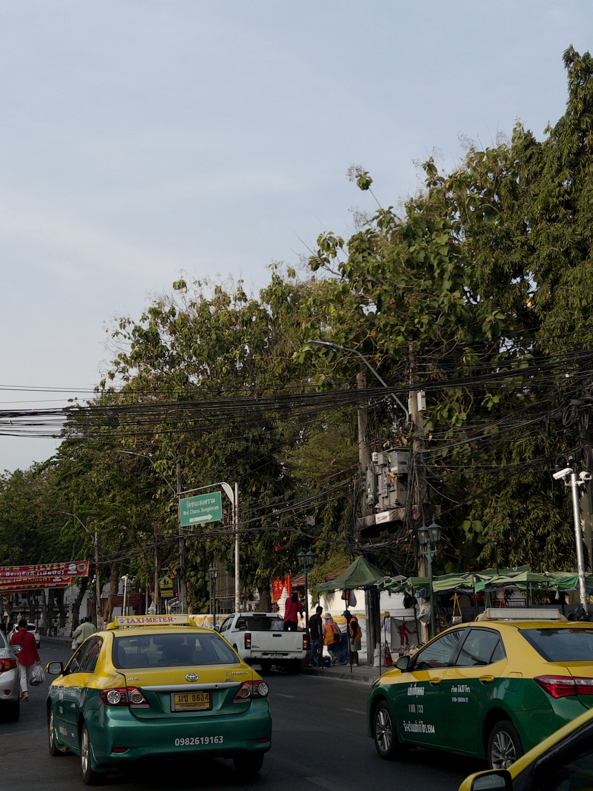

First 24 Hours in Thailand

January 28th, 2025
From the last stop of the airport tram I ordered to Grab to take me the rest of the way to the hostel. I had two backpacks—about 25 kg of luggage—, myself, and the driver to fit on the bike. Then we are off, and I nearly started crying. Back on the back of a motorbike with all my life‘s belongings on my back while I’m going white knuckle, gripping the bottom of the seat, trying to keep my balance while we are going so fast that my feet began to lift off the pegs. I debate holding onto my driver instead, but decided to just tighten my grip and squeeze the man between my thighs. I’m a little scared for my life, but it feels so good to be back.
We’re weaving in and out of traffic literally centimeters in the car on either side of us. There’s not much regard for traffic lights or rules. We’re driving into oncoming traffic, I grip the seat harder: he hit the gas. The weight of my bag pulled me back all I could think to myself was “engage your core”—some silly thing from pilates. I was trying to stay as stable as possible, so I can prevent myself from flying off the back of the bike but at the same time not smashing my face into the back of the driver’s helmet when he abruptly stops.
It felt like no time at all had passed. I felt like I was coming home from a long day of work. Australia felt like a fever dream. My eyes were watering and I couldn’t stop smiling, the feeling of relief wash over me like the air rushing against my face. Maybe my eyes were watering; maybe I was crying, but it felt so good. It sounds so cheesy but I couldn’t stop thinking “I’m home”, or “It feels so good to be back”. Obviously I had never been there before. Maybe I meant “It’s so good to be back in Southeast Asia on the back of a motorbike totally and completely free of all material and relational things”. I don’t know.
I’m sitting at a café called Frog Pond. I need to buy sunglasses. I’m so excited to yoga later. I’m now eating pad Thai and slipping on an orange juice slushy. There’s piano music playing in the background. There’s a little man ring a bell as he pushes his food cart. He’s selling fruit, pineapple, mango, dragon fruit, 30 bhat each—about $.90. A car drives around the corner and the street is so narrow with so many people that it can’t be going any faster than a couple miles an hour.
They are hundreds of little stalls lining the street. They sell clothes, jewelry, handbags—mostly brands like Northface, Kathmandu, Patagonia. All fake. They sell phone cases and chargers, souvenirs and weed. They sell so much weed. I bought enough for a couple spliffs, just about 80 bhat for a few grams.
Finishing my food, I lit my joint, and I thought, looking out at the scene unfolding before me, “have you ever seen Heaven?”